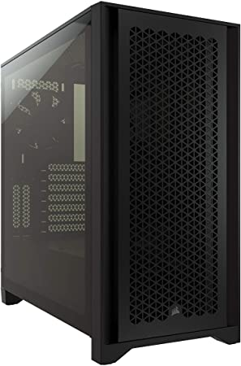

During the summer of 2022, I built my first Personal Computer (PC)! I decided to upgrade from an HP laptop to a PC for several reasons, including
- a more stable, powerful CPU
- better graphics for gaming
- and an excuse to get a larger monitor :D
I didn't have any experience or knowledge of PC building before this, so I asked some friends to help me pick out parts and assemble the final product. Below, you will find information on the basic PC parts and the specifics about my PC building experience.
The CPU is the control center of a computer. It's a relatively small electronic chip that runs all the machine's instructions, including the operating system and apps. Modern CPUs contain multiple cores, which allows processes to run simultaneously and at faster speeds.[1]
Intel, AMD, and NVIDIA are currently top-rated CPU manufacturers. Popular CPUs include the Intel Core i5 12600K, Intel Core i9 12900K, and the AMD Ryzen 7 5800X3D.[2] I decided to get the Intel Core i7 12700K, which contains 12 cores. The i7 chip has more processing power than the i5 chip, but is slower than the i9 chip. The i7 chip has so far been performing to expectations.
Intel Core i7 12700K
The GPU is the unit that enhances graphics and rendering. There are two types of GPUs: integrated and discrete. An integrated GPU is already attached to the CPU and is generally more efficient and less costly. A discrete GPU, also known as a dedicated graphics card, is a chip that is separately attached to the motherboard. This type of GPU is used for more resource-intensive applications and requires more energy and cooling.[3]
I invested in the ZOTAC Gaming GeForce RTX™ 3060 Ti Gaming Graphics Card. And to clarify, a graphics card is a board that integrates a discrete GPU with its necessary components.
ZOTAC Gaming GeForce RTX™ 3060 Ti Gaming Graphics Card
According to Tom's Hardware,[4] the highest rated 2022 graphic cards include:
- GeForce RTX 3080
- Radeon RX 6800 XT
- GeForce RTX 3090 Ti
- Radeon RX 6700 XT
- GeForce RTX 3060
RAM is the main memory of the PC, where the operating system and applications can quickly store and read data. It's much smaller than other storage drives, but that also means that it's much faster to access RAM. RAM is volatile, meaning that data is stored while the computer is on and wiped when the computer turns off.[5]
I got two 8GB RAM sticks for my PC. My motherboard (explained in next section) holds a total of 4 RAM sticks, but I believe that most people usually only need 16GB of RAM. I got the Corsair Vengeance RGB PRO RAM sticks, and I really like them because they light up!
Corsair Vengeance RGB PRO 16GB (2x8GB) DDR4 3200MHz C16 LED Desktop Memory
The motherboard is a large printed circuit board (PCB) that connects PC components together. The PCB has slots for all required components, including the CPU, GPU, memory, storage, and power. Because the motherboard connects to everything, it is essential to pick components that are compatible with your motherboard![6]
I chose the MSI MPG Z690 Motherboard, which has a LGA 1700 socket (CPU) and is DDR4 compatible (RAM). It's also able to connect to Wifi, which was a huge plus for me.
MSI MPG Z690 Edge WiFi DDR4 Gaming Motherboard
The motherboard is generally the biggest component of a PC, so be sure that it fits your PC case!
The CPU cooler is a dedicated cooling unit for the CPU. There are two main types of cooling: air cooling and liquid cooling. Air cooling units are generally cheaper and are used for setups with less intensive tasks. Liquid cooling units are usually more expensive but more effective. They also require more manual maintenance than air cooling units do.[7]
I got a MSI MAG CoreLiquid P240, which is an all-in-one (AIO) liquid cooler. AIO means that the liquid unit is all sealed together, so I don't have to maintain the liquid/pumps in the cooler, just the fans and radiator.
MSI MAG CoreLiquid P240 - AIO CPU Liquid Cooler - 240mm Radiator - Dual 120mm PWN Fans
The PSU provides power to the entire PC, so choosing a compatible power supply is extremely important! One of the most important considerations is the number of watts that your PC requires. An average gaming build consumes about 500 watts, so a 600 or 650 watt PSU is a good option. It's also important to note that a higher watt PSU doesn't necessarily use more energy, since it just supplies the PC with the power it requires. The efficiency of the PSU is also an important consideration, since efficient PSUs can save on power and emit less heat.[8]
My PC uses the Corsair RM850x, which is an 850 watt, fully modular power supply. Fully modular means that the power supply's cables are detachable, which helps with cable management.

Corsair RMx Series (2021), RM850x, 850 Watt, GOLD, Fully Modular Power Supply
There are two main types of non-volatile storage: Hard Disk Drives (HDD) and Solid State Drives (SSD). Hard drives are made up of physical disks with a head that can read/write data, whereas solid state drives use NAND flash memory. SSDs are much faster and more reliable, but this also means that they cost more.[9]
I decided to buy two SATA SSDs; one 250GB one for my operating system and other important files, and one 2TB one for everything else. There's another type of SSD called Non-Volatile Memory Express (NVMe), which has more than 10x better performance than SATA SSDs. NVMes are also known for their incredibly small size, which helps with cable management.
Samsung Electronics 870 EVO 2.5 Inch SATA III Internal SSD
The PC case is what everything listed above fits in. There are a variety of PC cases available in all kinds of shapes, sizes, and colors. It's important to choose a case that is large enough to fit all of your parts and that allows good airflow.
My PC case is the black Corsair 4000D, which has a side of tempered glass. It came with two installed fans that you can move around to change the airflow. There are even magnetic dust covers on most sides to prevent dust from gettingi inside!
Corsair 4000D Airflow Tempered Glass Mid-Tower ATX PC Case
- “What Is a Central Processing Unit?” Arm, https://www.arm.com/glossary/cpu.
- "The Best CPU Manufacturers." Ranker, https://www.ranker.com/list/the-best-cpu-manufacturers-and-top-cpu-brands/computer-hardware.
- "What Is a GPU?" Intel, https://www.intel.com/content/www/us/en/products/docs/processors/what-is-a-gpu.html.
- "Best Graphics Cards for Gaming in 2022." Tom's Hardware, https://www.tomshardware.com/reviews/best-gpus,4380.html.
- "What is RAM?" TechTarget, https://www.techtarget.com/searchstorage/definition/RAM-random-access-memory
- "How to choose a motherboard for 2022." newegg, https://www.newegg.com/insider/how-to-choose-a-motherboard/
- "How to Choose A CPU Cooler: 8 Factors to Consider." Tech Guided, https://techguided.com/how-to-choose-a-cpu-cooler/
- "PC Power Supply: How to Choose the Right One for You." Intel, https://www.intel.com/content/www/us/en/gaming/resources/power-supply.html
- "What is the Best Storage Type for a Gaming PC in 2021?" Chillblast, https://www.chillblast.com/learn/what-is-the-best-storage-type-for-a-gaming-pc-in-2021/